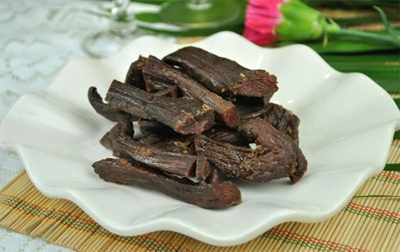

牛肉是中国人的第二大肉类食品，仅次于猪肉，牛肉蛋白质含量高，而脂肪含量低，所以味道鲜美，受人喜爱，享有“肉中骄子”的美称。牛肉干是用黄牛肉腌制而成的肉干，它含有人体所需的多种矿物质和氨基酸，既保持了牛肉耐咀嚼的风味，又久存不变质。
能量550千卡；蛋白质45.6克；脂肪40克；碳水化合物1.9克；胆固醇120毫克；硫胺素0.06毫克；核黄素0.26毫克；烟酸15.2毫克；钙43毫克；磷464毫克；钾510毫克；钠412.4毫克；镁107毫克；铁15.6毫克；锌7.26毫克；硒9.8微克；铜0.29毫克；锰0.19毫克。
一般人都可食用，牛肉干的膳食纤维较粗不易消化，有很高的胆固醇和脂肪，老年人、儿童及消化力弱的人不宜多吃；感染性疾病、肝病、肾病的人慎食。
牛肉有补中益气、滋养脾胃、强健筋骨、化痰息风、止渴止涎之功效，宜于中气下隐、气短体虚、筋骨酸软、贫血久病及面黄目眩之人食用。